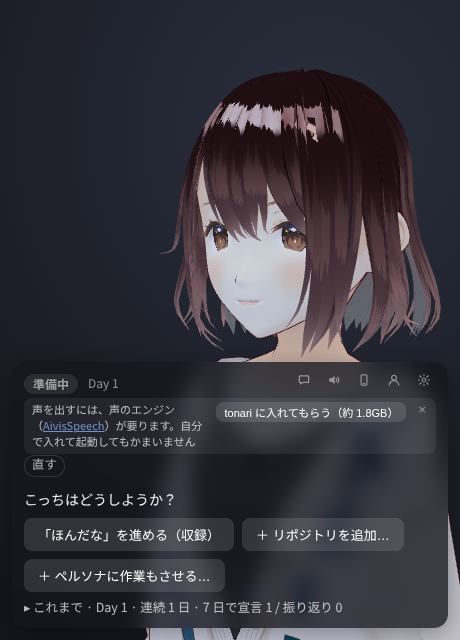

隣の席で AI が作業している、
集中のためのデスクトップアプリ。
一人だと手が止まりがちな人のためのアプリです。画面の隅で AI のキャラクター（ペルソナ）が自分のプロジェクトを進め、ときどき独り言を言います。その隣で自分の作業をして、休みたくなったら休憩。そのあいだはペルソナも手を止めます。
入れるのは無料で、14 日間はそのまま試せます。続けて使うなら月額 800 円。アカウントは要りません。プログラマでなくても使えます。macOS（Apple シリコン）・Windows・Linux。画面もキー入力も見ません。
一日の流れ
会話だけしたいときは、開始画面の「ちょっと話す」から話せます。「おしまい」で元の入力欄に戻ります。名前の読みは設定でき、呼び方は本人の希望を優先しながら AI が考えます。
-
宣言する
「そっちは今日なにやる？」に、今日やることを一言で答えます。作業時間（決めない・30 分〜2 時間）も選べます。
-
隣で作業が始まる
ペルソナが自分の作業を始めます。こちらも自分の作業をします。ペルソナは読んだり書いたり試したりしながら、ときどき独り言を言います。
-
好きなときに休憩
休みたくなったら「休憩する」を押します。ペルソナも手を止め、入力欄から短く話せます。休憩した時間と作業時間が表示され、「再開する」を押すと作業に戻ります。25 分ごとに決まった長さで休みたいなら、始めるときにポモドーロを選びます。
-
振り返って、少し雑談
作業時間が来ると、ペルソナが「おしまいにする / もう少しやる」を聞きます。おしまいにするか「ここで終わる」を押すと、「どこまでいった？」と聞かれます。宣言どおりに進んだかと、集中の度合いをボタンで答えます。そのあとは雑談の時間で、「おしまい」を押すまでペルソナと話せます。窓の × で終えるときも、締めの一言のあとに終わりの画面が出ます。「閉じる」でアプリを終了します。
ペルソナは何をしているのか
ペルソナは Claude などの AI です。人ではありません。独り言はその場で AI が作っています。作業は、その場で AI がするか、前に AI がした作業の録画です。仕草は本物の出来事から動かしています。ファイルを書くとキーを打ち、声に合わせて口が動き、テストが落ちるとしょんぼりします。ランダムに再生する待機モーションはありません。
始めるときに、ペルソナの作業を選びます。
- 自分のプロジェクト
- ペルソナが自分の作業場所で、自分のアプリを毎日少しずつ作ります。最初は読書記録アプリ「ほんだな」です。
- 前の作業をなぞる
- 前にした作業の記録（出来事とその間隔）を、そのとおりになぞります。作業の分の AI は動かないので、費用は独り言の分だけです。独り言は前にしたこととして話し、聞かれれば記録の再生だと答えます。新しく作ったペルソナには作り手が前に収録した「ほんだな」の録画が入っていて、AI を入れなくても初日からなぞれます。
- 見守る
- 別に回している Claude Code の作業を、ペルソナの作業として見せます。拾うのは Claude が書いたコミットの件名とブランチ名だけで、ファイルの中身は読みません。
- 手伝う
- 手元のリポジトリの作業を一部任せます。元のリポジトリには書かず、複製の中で作業します。

用意するものと費用
- 月額プラン（14 日間は無料）。独り言と休憩の会話は tonari のサーバーで作ります。PC で初めて使った日から 14 日間は無料で、カードの登録も要りません。続けて使うなら月額 800 円（税込）で、tonari のパネルか設定の「続けて使う」から申し込みます。申し込まなくても、前の作業をなぞる・見守るはそのまま使え、独り言は決まった文になります。1 つの申し込みで PC 2 台まで使えます。解約はいつでもでき、払った期間の終わりまで使えます（特定商取引法に基づく表記・利用規約）。
- 考えるのに使う AI（任意）。入れなくても始められます。そのときは、独り言と休憩の会話を tonari のサーバーで作り（上の月額プラン）、ペルソナの作業は「前の作業をなぞる」か「見守る」になります。ペルソナに本当に作業もさせるなら、作業の選択の「＋ ペルソナに作業もさせる…」から、どちらかを選びます。
- OpenCode。設定（歯車）の「作業に使う AI」で「tonari に入れてもらう」を押すと、tonari が OpenCode を入れます（約 60MB）。無料のモデルがあります。無料のモデルは期間限定で、送った内容が提供元の学習に使われるものがあります。
- Codex。Codex CLI を入れて
codex loginしてから tonari を起動し直し、「作業に使う AI」で選びます。使うのはその Codex の利用枠か API の費用です。独り言と休憩の会話は、そのときも tonari のサーバー（上の月額プラン）で作ります。
- 声（任意）。ペルソナは AivisSpeech の声で話します。初めて起動したときの「はじめに、声の準備」で「声を入れる」を押すと、tonari が入れます（約 1.8GB）。入れなければ字幕だけになります。
- Node.js。ペルソナが自分のプロジェクトで使います。初めて始めるときに tonari が落とします（約 50MB。自分で入れている Node.js とは別に置きます）。
入れる
自分の OS のファイルをダウンロードして入れ、tonari を起動します。インストーラは署名していないので、初めて開くときに OS の警告が出ます。作者を OS が確かめられないという警告で、危険と判定されたものではありません。それぞれの通し方を、ファイルの下に書いています。
-
macOSApple シリコン、.dmg
初めて開くと「開けません」と出ます。一度開こうとしてから「システム設定 → プライバシーとセキュリティ」の下にある「このまま開く」を押してください。macOS 15 以降は、右クリックの「開く」では通れません。Intel の Mac では動きません。
-
Windows.exe
「Windows によって PC が保護されました」と出たら、「詳細情報」を押してから「実行」を押してください。会社の PC では管理者の設定で進めないことがあります。
-
Linux.deb
Ubuntu や Debian 系はこちら。ほかは AppImage 版。Ubuntu 24.04 などで AppImage が起動しないときは .deb を使ってください。
版の一覧は Releases にあります。
署名していないのは、個人で作っていて、署名と公証の費用（Apple は年 99 ドル、Windows は証明書の年額）をまだ払っていないためです。細かい使い方と設定は README にあります。
見ないもの、送らないもの
隣にいるためのアプリなので、あなたを見張るものにはしていません。
- 画面の内容もキー入力の中身も見ません。カメラもマイクも使いません。あなたの様子として使うのは「最後に入力してから何秒たったか」だけです。
- AI に送るのは、あなたが書いた今日の宣言と、休憩中と雑談での返事、あなたの名前と呼び方、そしてペルソナ自身の作業の出来事（読んだファイルの名前や結果の要約）です。あなたの画面とキー入力は送りません。「手伝う」を選んだときは、任せたリポジトリの複製のファイルを AI が読むので、その中身も AI の提供元に送られます。「見守る」では、Claude が書いたコミットの件名とブランチ名を送ります。OpenCode も API キーも使わないとき（Codex を使うときも）は、独り言と会話の材料（今日の宣言、休憩中と雑談での返事、名前と呼び方、ペルソナの作業の出来事）を tonari のサーバーに送ります。サーバーはそれを AI の提供元（AWS の Bedrock）に渡し、独り言と休憩の会話を作ります。
- ペルソナが書き込むのは自分の作業場所だけです。打つコマンドは中身を見て止めていますが、すべては防げません。
- 起動したときに 1 日 1 回、新しい版があるかを GitHub に聞きます。あなたを見分けるものは送りません。設定のファイル（
user.yaml）で切れます。 - 記録（宣言、集中の度合い、独り言）はあなたの PC の中にだけ残ります。tonari のサーバーは、送られた本文と IP アドレスを残しません。残すのは、サーバーが発行する無記名のトークン（のハッシュ）、日ごとの回数、送信元を見分けるために IP アドレスから作った値です。月額プランを申し込んだ人については、それに加えて、トークン（のハッシュ）と Stripe の申し込みの番号・顧客の番号・状態を結んで残します。名前・メールアドレス・カードの情報は Stripe が持ち、tonari のサーバーには残しません。
- ブラウザ版（app.tonari.code-contractor.ai）は、アプリを入れずにブラウザで使うものです。ペルソナも記録もサーバー（AWS の東京リージョン）で動き、記録・ペルソナの記憶・設定はサーバーに残ります。ログインしなければ、あなたを見分けるのはブラウザに置く無記名の id（cookie）だけです。ログイン（メールアドレスにリンクを送る方式。パスワードはありません）すると、メールアドレスと、記録の置き場の対応、ログインのために発行した鍵のハッシュを残します。ログインのメールは AWS の SES から送り、返信は読みません。ブラウザ版でも、画面の内容やキー入力は見ません。
- ランキングはありません。連続の日数は出しますが、途切れても責めません。
よくある質問
- お金はかかりますか？
- 入れるのは無料で、14 日間は無料で試せます。続けて独り言と会話を tonari のサーバーで作るなら、月額 800 円（税込）です。申し込まなくても、前の作業をなぞる・見守るは使えます。Anthropic の API キーで使うときは、使った分の API の利用料を Anthropic に払います（用意するものと費用）。費用や用意するものは版が上がると変わることがあり、変わるときは Releases のノートに書きます。
- 解約はどうしますか？
- 申し込んだ PC の tonari の設定（歯車）の「お支払い」から「お支払いの管理」を開いて解約します。PC が手元に無いときは、特定商取引法に基づく表記にあるお支払いの管理のページで、申し込みに使ったメールアドレスでログインして解約できます。解約しても、払った期間の終わりまで使えます。
- 何がどこに送られますか？
- 上の「見ないもの、送らないもの」のとおりです。送り先は、選んだ AI の提供元（Anthropic か、OpenCode で選んだモデルの提供元か、Codex の OpenAI）です。OpenCode も API キーも使わないとき（Codex を使うときも）は、独り言と会話を tonari のサーバーで作り、サーバーから AWS の Bedrock に渡ります。ブラウザ版では、独り言と会話の材料と、記録・ペルソナの記憶が tonari のサーバーにあります。月額プランの支払いは Stripe が受けます。ほかに、新しい版があるかを GitHub に 1 日 1 回聞きます。
- ペルソナは本当に AI ですか？
- はい。人が中にいることはありません。独り言はその場で AI が作り、作業はその場で AI がするか、前に AI がした作業の録画です。
- オフラインで動きますか？
- いいえ。独り言に、AI の提供元か tonari のサーバーへの通信が要ります（届かないときは決まった文で代わりに話します）。ペルソナの作業も、前の作業をなぞるとき以外は AI の提供元への通信が要ります。声の合成だけは手元の PC で行います。
- ペルソナが自分のファイルを触ることはありますか？
- ペルソナが書き込むのは自分の作業場所（tonari が作るフォルダ）だけです。「手伝う」を選んだリポジトリでも、元ではなく複製の中で作業します。ただし、そのリポジトリのテストやスクリプトを実行することがあるので、信頼できるリポジトリだけを選んでください。
- スマホから使えますか？
- 使っている途中でパネルのスマホのボタンを押すと、ペルソナとパネルはスマホのブラウザに移り、PC の窓には QR コードが出ます。同じ Wi-Fi のスマホで読めば、その日の作業はそのまま続きます。ssh 先の開発マシンで動かして、手元のブラウザで開くこともできます。
- 困ったときは？
- Issues に書いてください。